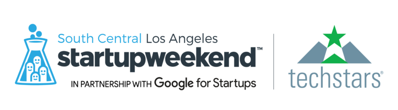
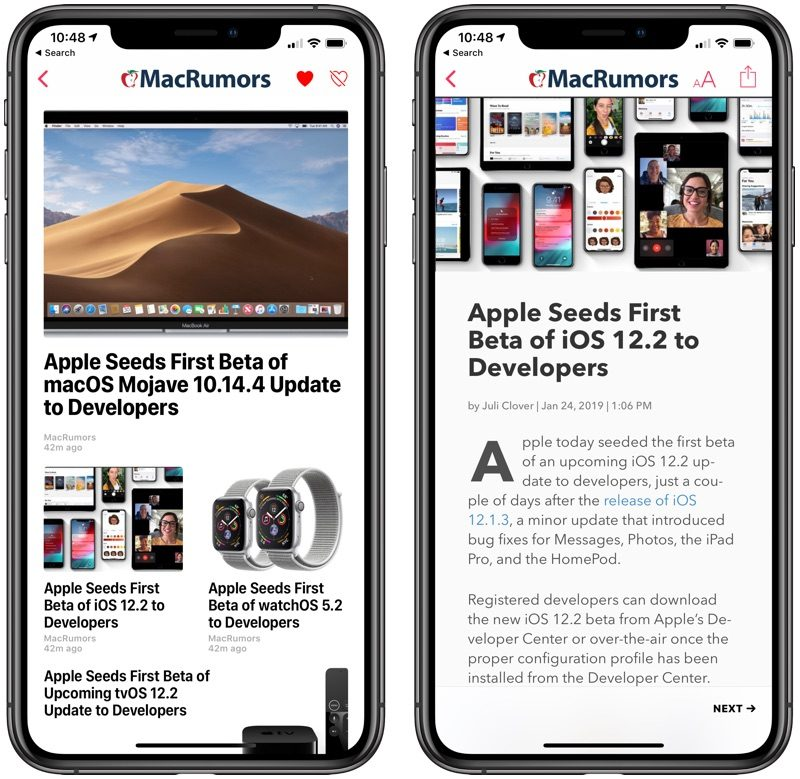
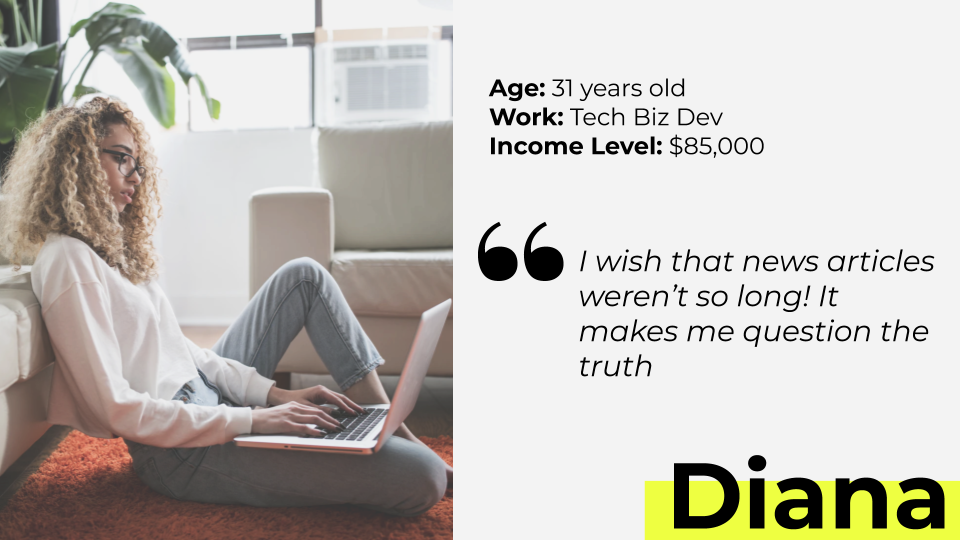
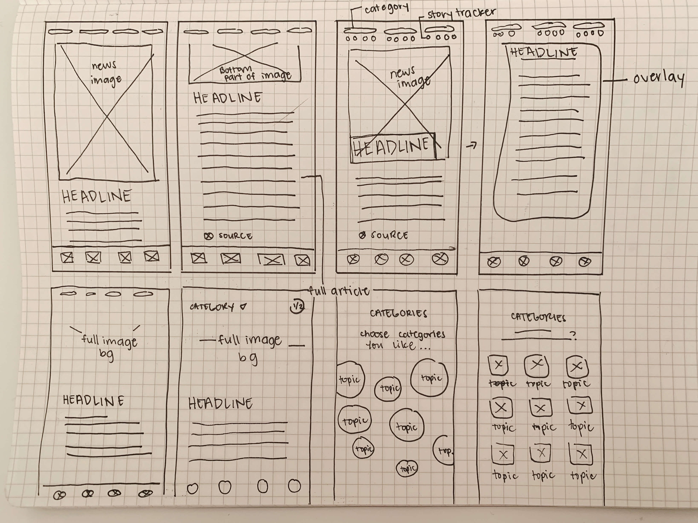
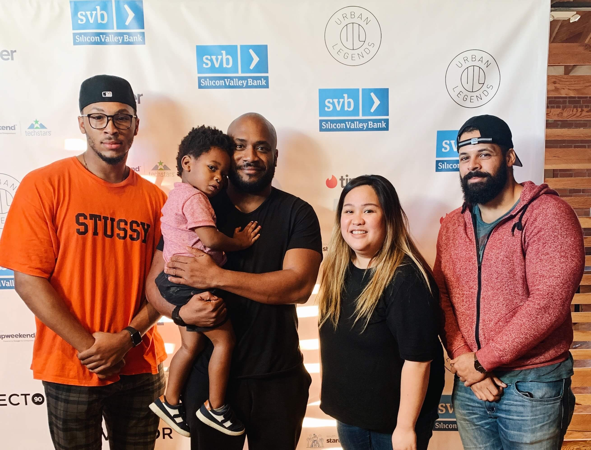

Design Role
UX Design
Visual Design

Design Deliverables
User Research
User Persona
Wireframes
Branding
Visual Design
High Fidelity Mockups
Hi-Fi Prototyping

Duration & Tools
54 hours
Figma
Adobe XD
Part I: Overview
The Event
This project was done during Startup Weekend South Central organized by Techstars in partnership with Google for Entrepreneurs. It was a 54-hour event, where participants pitched ideas, formed teams and solved a specific real-world problem through rapid prototyping and design thinking.
 What is Summit?
What is Summit?
People don’t consume news the way they used to. There’s a reason people say that the newspaper is a dying art form. Journalists have also formed opinions no matter how much they try to stay objective and everyone has a surplus of platforms to get their news from. Our team explored how we could offer users with summarized articles so that they can stay at the peak of news that they care about.
 The Problem
The Problem
The majority of the population are tired of having to get their news from several different platforms that all share the same flaws:
- News apps are clunky and messy to navigate
- Reading lengthy articles and having to scour different sources is time-consuming
- Articles tend to be biased and can even be fake at times
 The Solution
The Solution
Summit wants to create the best user experience for mobile news by offering the following:
- Curating news feeds according to user interest
- Utilizing artificial intelligence to summarize and remove bias from news articles
- Allow users to pick up from where they left off and avoid showing articles that they've already read
Part II: Research & Discovery
 User Survey
User Survey
Note: Due to the nature of the hackathon event, we had to be resourceful and work with limited information.
Despite time constraints, we knew the best course of action to validate our problem and determine goals for our MVP would come from user research. That being said, we asked hackathon participants and our social media contacts to respond to our user survey. Some of the questions asked were:
- What’s your main source for news?
- What features do you like/dislike about your news app?
- How much time do you spend on finding news/reading articles?
We found this particular information interesting and helpful:
After conducting the user survey, we were able to confirm that we shared the same frustrations as others but we hadn’t realized that our users were able to get the jist of an article from headlines and images as well. The results and feedback received in the survey gave us information we needed to build Summit within a short period of time.
 The Competition
The Competition

We took time to scope out the competition to see what they were doing right and of course, what they were doing wrong. Strengths lied in the fact that our competition had updated articles and good imagery however, the length of the article and relevance to the user was lacking.
For Summit to be successful, we knew that we had to offer our users a way to consume news that they cared for in a short amount of time and without bias. The basic who, what, where, when and how would keep our users updated and give them the ability to form their own opinions as well.
 User Persona
User Persona

After analyzing data, we created a user persona that’d embody Summit News’ target audience. Say hi to Diana! Here’s more information about her:
Motivation for use/subscription
As an educated working professional, Diana considers herself well
informed about current events and prides herself on being a knowledgeable
source of information for friends and family about what is happening
in the world.
Goal/needs
- Stay informed about news developments as they happen
- Form her own fact-based opinion without influence from media rhetoric
- Consume a substantial amount of news efficiently in a short amount of time
Frustrations
- Overwhelmed with numerous articles on the same topic but each with its own self-interest or politically motivated filters that obstruct the facts.
- Getting to the crux of what is actually happening in the news takes up a substantial amount of her time and energy
- Evaluating the political bias of her news sources is frustrating
Project Scope
We determined our MVP by identifying goals.
- Provide blurbs of news articles that are bias-free
- Add the ability to read more about the article
- Select appropriate imagery to convey the jist of the story
- Onboarding process to sign up and select topics of interest
Part III: User Interface
 Wireframing
Wireframing
With our goals identified and solution in mind, we started sketching so that we could quickly use this for paper prototyping. After discussing and brainstorming, we had an idea of how we wanted our screens to look.

 High-fidelity Mockups
High-fidelity Mockups
After going through our paper prototypes with a technical coach, our team worked on creating high-fidelity mockups. Here’s a sample of our design:
Part VI: Wrapping It All Up!
Presenting to Judges
The last step for South Central Startup Weekend was to pitch our idea to the jury comprised of Aaron Saunders (founder of Inclusive Innovation Incubator), Austin Clements (partner at OPV), DeMarcus Williams (Director at Silicon Valley Bank), Kyle Miller (Product at Tinder) and Qiana Patterson (Vice President of Strategic Development at HopSkipDrive).
In our presentation, we discussed why there’s a need for our product and how it would gain revenue. In addition to this, we also explained the tech plan to train and perfect Artificial Intelligence for Summit News.
Our hard work paid off and our team won third place!
 What I Learned
What I Learned
This was my first hackathon and I was very anxious going into it. Walking away from it now, I realize that this was one of the most thrilling experiences I’ve ever had in my life.
My biggest challenge was convincing my teammates that we needed to research in order for us to create a product with intention and identify the scope of our project. In addition to this, I was able to fully utilize the skills I’ve honed from being a Customer Experience Lead and the skills I acquired from my UX Design program through Bloc to empathize with not just our potential users, but with my teammates as well. This helped me become the ultimate team player by being open to feedback from my teammates and technical coaches but also be able to offer my ideas and constructive critique as well.
Last lesson learned: Hackathons are fun! Despite the time crunch and high-pressure environment, it was such an incredible 54 hours and I can’t wait to participate in more!
 If I Had More Time...
If I Had More Time...
I’ve had a bit of time (and leftover adrenaline rush) post-hackathon so I was able to improve the onboarding process from when we initially built our prototype which you can view here.
If we did have more time however, I’d love to deep dive into research and spend more time on testing and iterating our product. In addition to this, finding ways to convert free customers to paying ones and mapping out the flow of this would also be a great addition to make the prototype more realistic.


Let's talk!
Let's chat about how we can create stellar user experiences, or anything and everything about UX over a cup of coffee. ☕